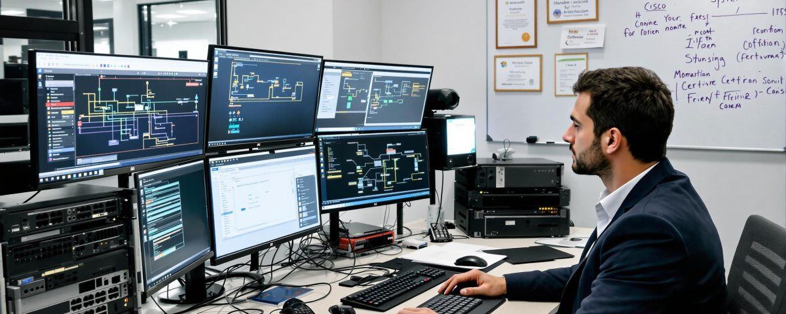

Les techniciens en maintenance serveur sont responsables de la gestion et de la maintenance des serveurs informatiques. Ils assurent la disponibilité, la sécurité et les performances des serveurs d'entreprise.
